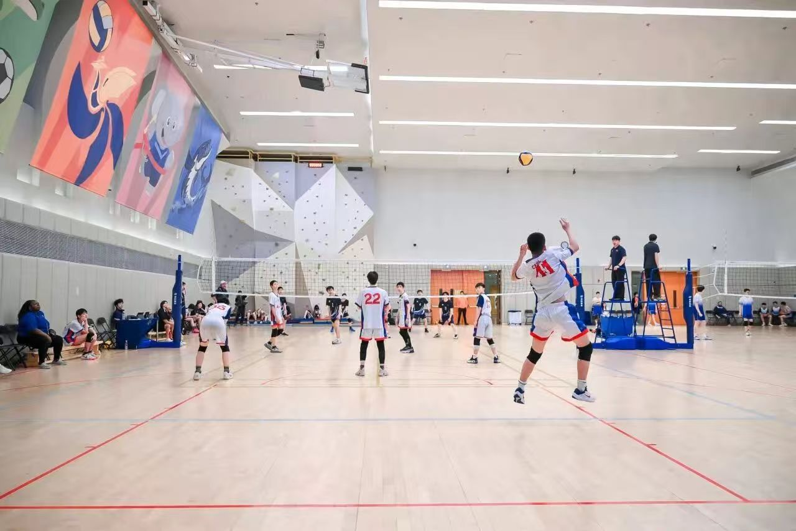
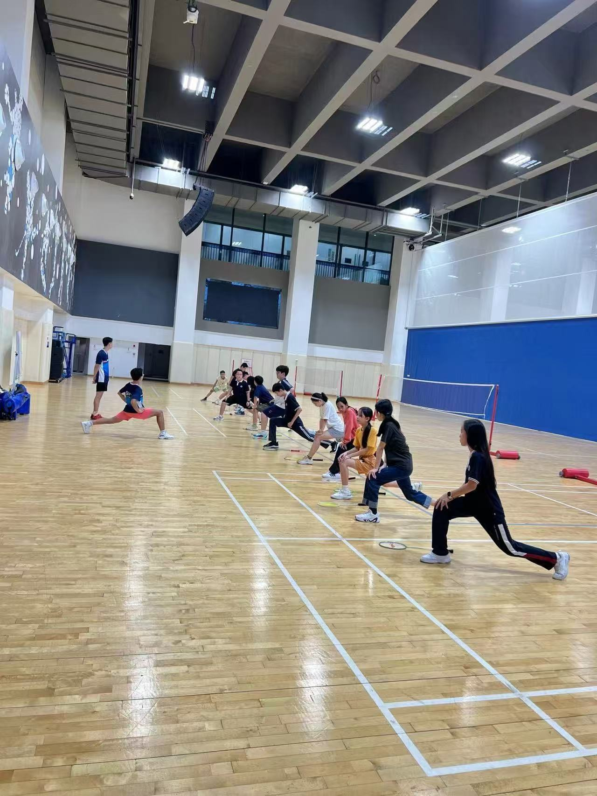
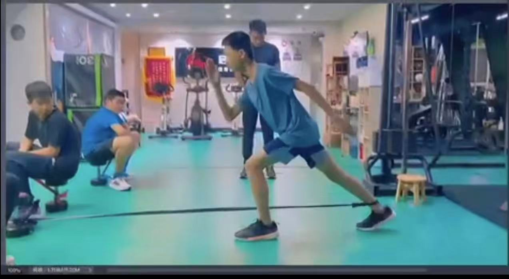

My Badminton Team
Life is not all contemplation.
Every smash in badminton, spike in volleyball, jump shot in basketball, carve on the snow, glide on the ice, and stride on the trail fuels my spirit, gifting me a boldness that echoes in all walks of life.
Badminton is my favorite sport.
I began formal coaching in primary school.
In Grade 9, I was selected for the school varsity badminton team and represented our school in city-wide competitions.
My dedication to rigorous weekly training and the internal competitions I organized to sharpen our skills paid off: we clinched a gold medal at the Guangdong provincial level.





